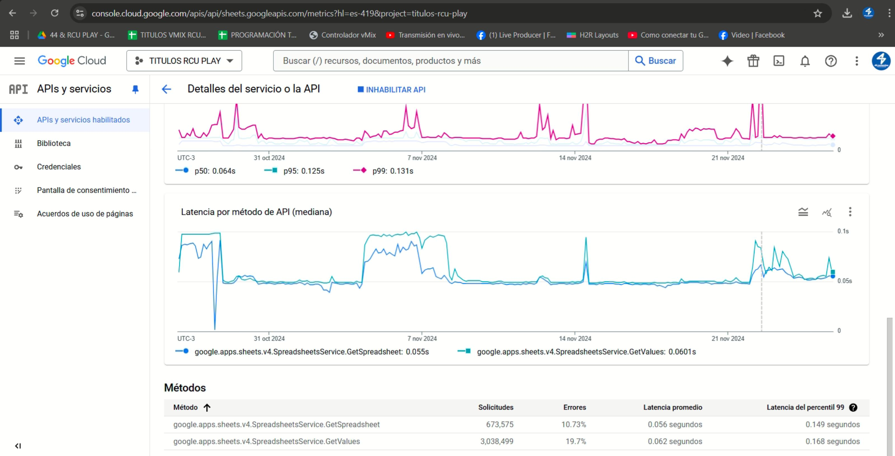
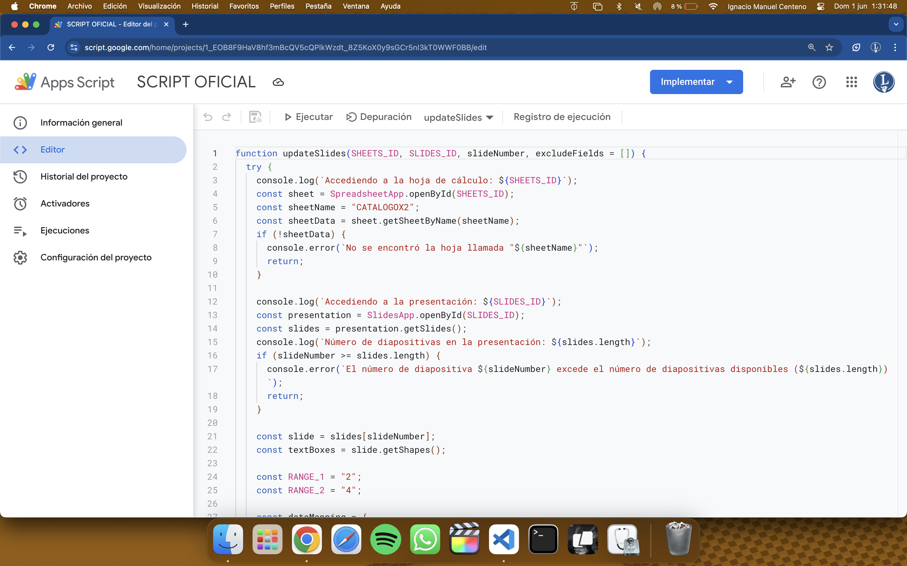
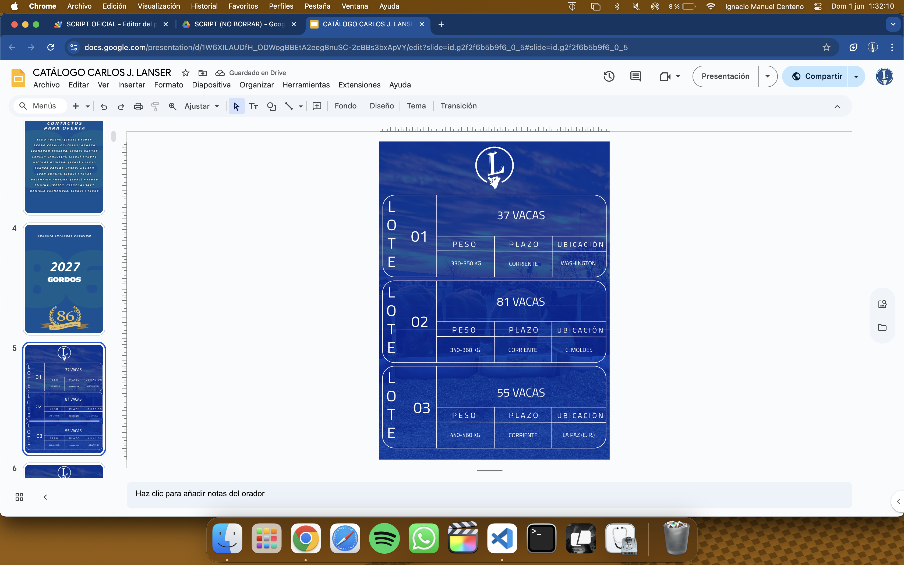

Sobre Mí
Soy Ignacio Centeno, un desarrollador creativo y técnico con enfoque multidisciplinario. Combino
programación, diseño de interfaces y producción audiovisual para crear experiencias inmersivas y automatizadas. Me
especializo en desarrollar soluciones innovadoras que conectan la tecnología con las personas, desde aplicaciones
inteligentes para el agro hasta visuales en vivo generativas.
Mis Proyectos





Conocimientos y Habilidades
-
💻 Desarrollo y Automatización
- Lenguajes: Python, JavaScript, HTML, CSS, SQL.
- Herramientas: Flask, Docker, Git, Bash, Google Apps Script.
- Interfaces: Tkinter, PyQt6, Visual Studio Code.
- Automatización: Apps portables para Windows, dashboards sincronizados, integración con APIs (OpenAI,
YouTube, Google Sheets).
- Redes y servidores: Nextcloud, ZeroTier, Apache/Nginx, Samba, Plex/Jellyfin.
-
🎛️ Producción Audiovisual & Visuales
- Resolume Arena: Visuales generativos conectados al input del público.
- VJing en vivo: Visuales sincronizadas con música.
- Controladores: Integración MIDI con Companion, ATEM y vMix.
- Automatización audiovisual: Recorte de videos según audio y palabras clave.
-
🐮 Agrotech
- App para feedlot con conteo automático de hacienda, mapa interactivo, alertas, reportes diarios y sincronización con
Google Sheets.
-
📱 Aplicaciones destacadas
- Descargador de YouTube con selector de calidad, audio 320kbps y diseño en modo oscuro.
- Dashboard colaborativo para productora audiovisual.
- Sistema RSS en tiempo real conectado a Google Sheets para señal en vivo.
- Script para Carlos J Lanser: Generación automática de catálogo público y privado desde Google Sheets.
- App tipo bloc de notas para Carlos J Lanser: Sincronización con Syncthing y edición con Obsidian.
-
🎹 Producción Musical y Sonido
- FL Studio: Producción musical, mezcla y diseño sonoro.
- Integración de visuales con audio en tiempo real.
- Composición original para branding y experiencias interactivas.
- Herramientas: After Effects, Final Cut Pro X, Adobe Media Encoder.
Perfil Integral
Soy adaptable a distintos entornos: desde eventos en vivo y productoras, hasta soluciones empresariales. Me apasiona
crear herramientas útiles, conectadas y visualmente atractivas que optimicen flujos de trabajo o generen impacto
artístico.
Mis Redes Sociales